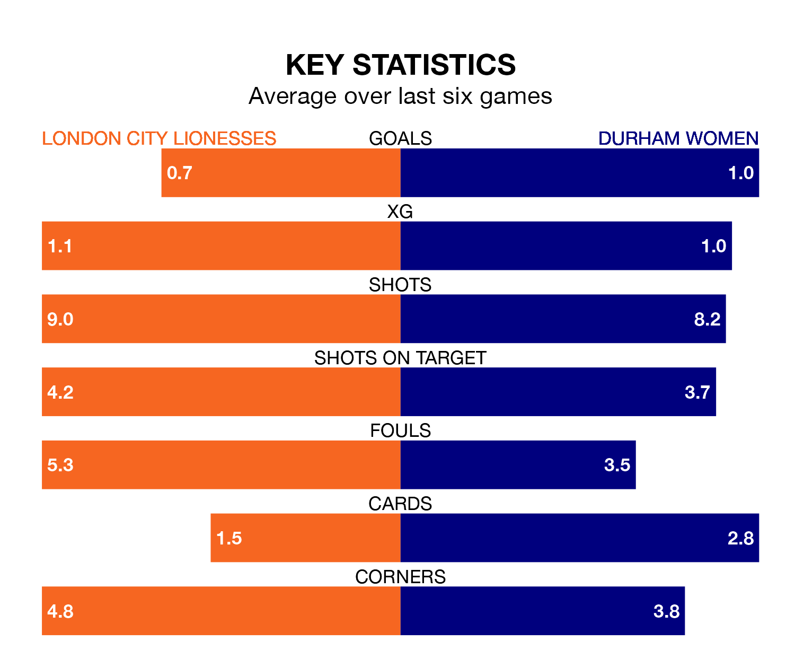

London City Lionesses are on a terrible run ahead of hosting Durham Women at Princes Park on Sunday, with just one point collected from their last six games.
The Lionesses have picked up just one draw in their last six FA Women's Championship games, and face a Durham side whose last six games have brought two wins and one draw.
In the last 10 years, London City and Durham have played each other on 18 occasions. London City won three of them, Durham 13, and they drew twice.
On average, the Lionesses scored 0.8 goals and Durham 1.8 in those matches.
Their last meeting was on September 17, when Durham won 1-0 at home.
London City are 10th in the table after 15 games, of which they have won three and drawn three, earning 12 points.
Durham are three places ahead of the Lionesses in seventh, with five wins and three draws putting them on 18 points.
With 14 goals in 15 games so far this season, the home team are scoring at below the league average rate with 0.9 goals per game. And they are conceding more than average, letting in 25 goals at a rate of 1.7 per game.
The visitors are also below average scorers, with 1.0 goal per game, compared to a league average of 1.3. They have conceded 1.9 goals per game.
In Chantelle Boye-Hlorkah, London City have one of the league's sharpest shooters so far this season. She has notched four goals in 11 appearances, to sit eighth in the scoring charts.
Durham's top scorer, with four goals in 15 games, is Amy Andrews.
London City's last match was on February 4, a 1-0 loss against Blackburn Rovers Women.
Durham lost 5-2 against Sheffield United Women last time out, also on February 4, with Andrews and Beth Hepple on the scoresheet.
Updated: 09:02 (UTC), 13/02/24